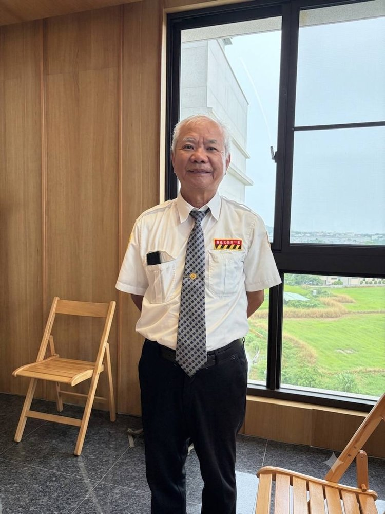

邱金沙
正德佛堂



正德五十週年 — 道親心得分享
發一崇德 邱金沙
各位點傳師、各位講師、各位前賢，大家好。後學是邱金沙。
感謝天恩師德，讓後學有緣求得大道。適逢正德佛堂創壇五十週年，後學求道至今也只有十年，在此寫一些求道以來身心靈各方面的改變，作為紀念。
2016年7月，正德的前賢們來主動做義診活動，借用協天宮作為場地。當時後學是宮主，受人引緣，前賢們要後學求道，經徵得恩主公三聖杯，便現場求道。當天還有數位信眾一起求道。之前後學已經拜恩主公為師，如今再拜濟公活佛為師，所以後學可以說有兩位仙佛老師。
進入道場進修班，講師們常常提及修道修心，也就是改毛病、去脾氣而已。所謂心生則種種法生，心滅則種種法滅。人身上有各種脾氣毛病，因為因緣果報的輪迴，在理數氣數中，積累出沉沉疊疊的各種貢高我慢、酒色財氣的習染。老師時常提醒，我們也會意識到這些毛病，但是不久又會再犯了。講師們也常常提到三省四勿，要常常反省自己犯的過錯，佛前懺悔不二過。談經典，神秀大師有一首偈子：「身是菩提樹，心是明鏡台；時時勤拂拭，勿使惹塵埃。」人經常自尋煩惱、自找是非，「時時勤拂拭」正好可以對治這些煩惱，逐漸脫落理數氣數的壞習慣。修行的人要先看透、看開，其次要放下。
以上略述求道以後的一點體悟，請各方大德指正，不勝感謝。
（依邱金沙道親心得整理，民國115年6月）